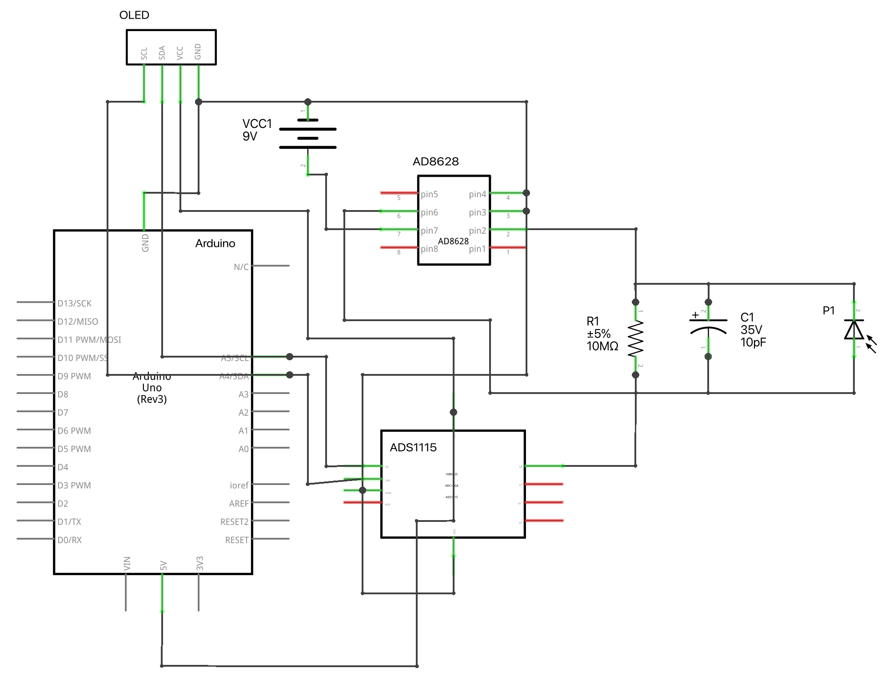
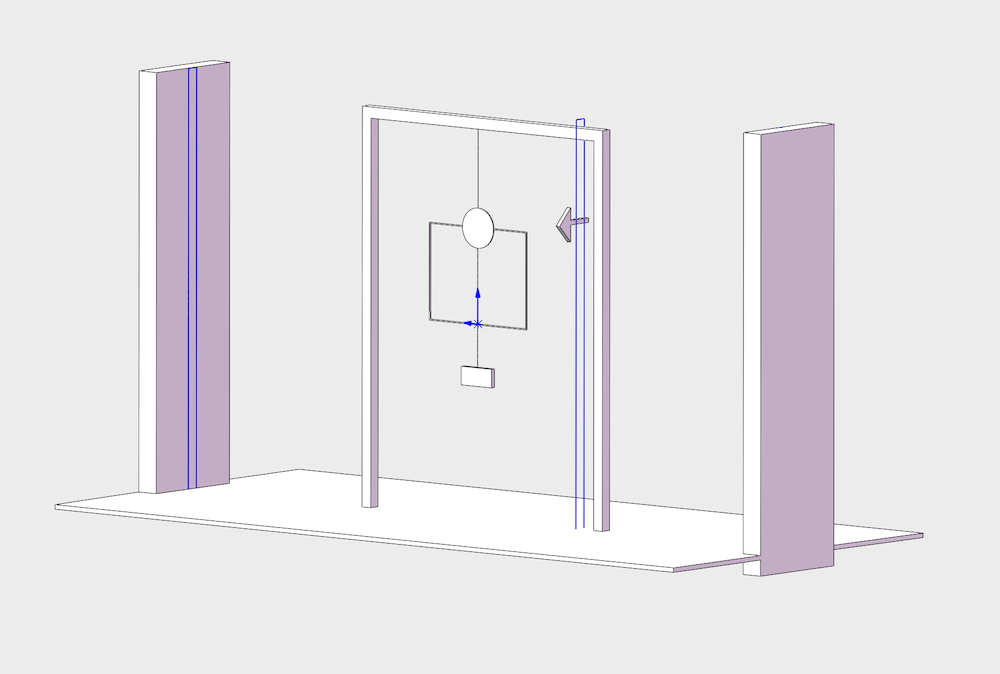
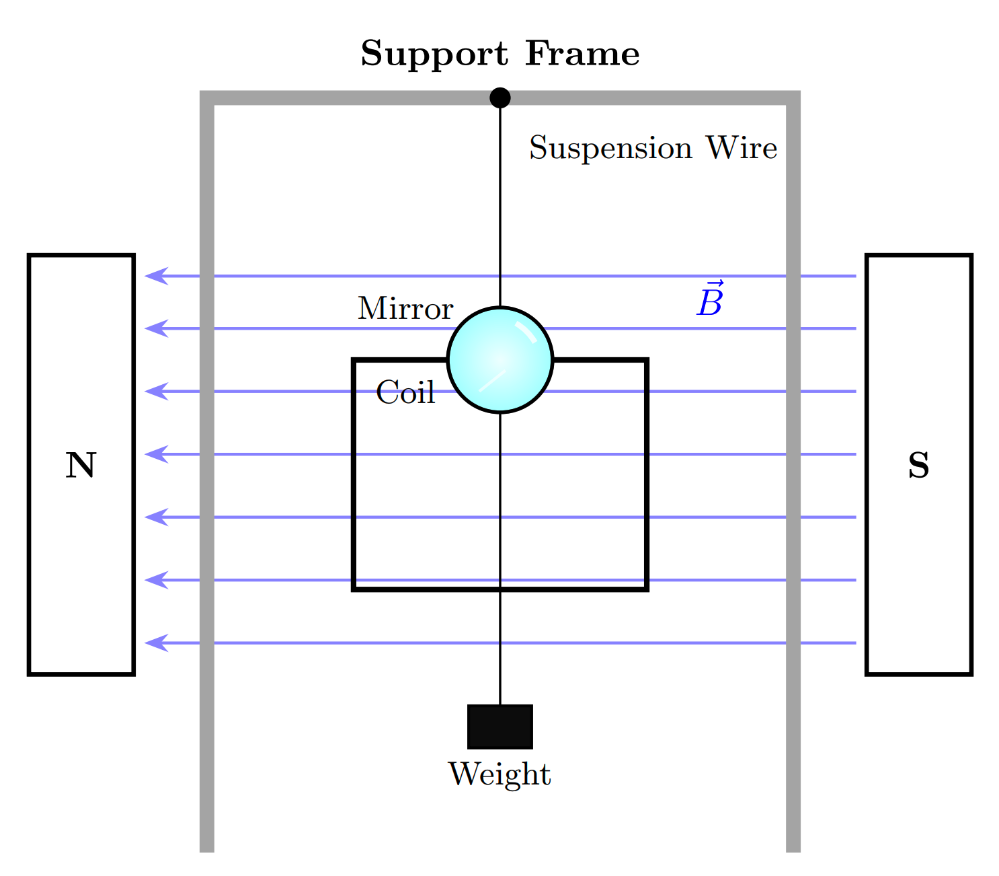
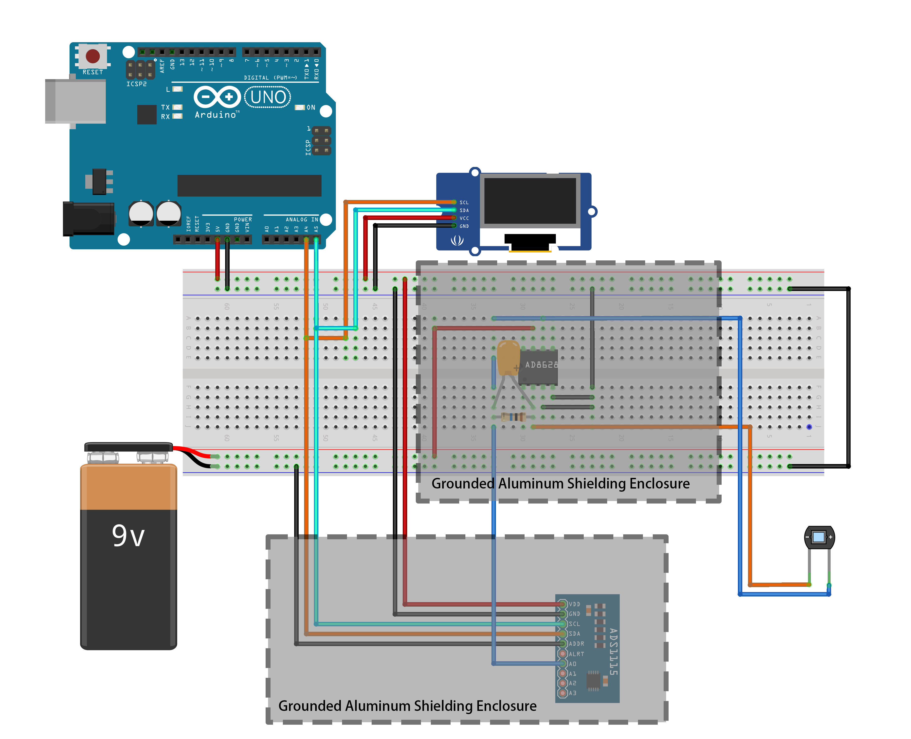
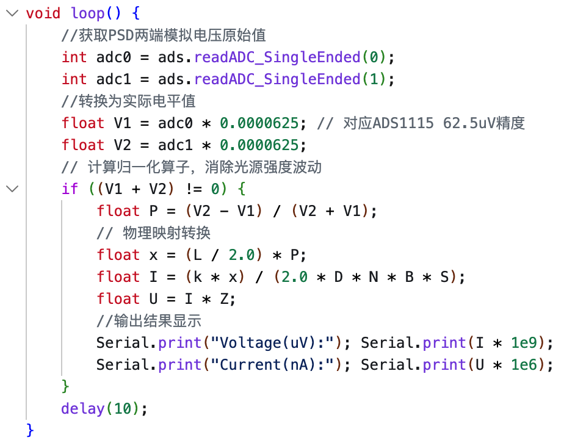
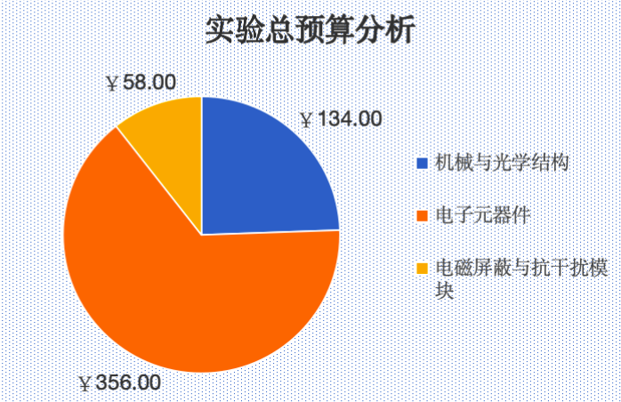

Mesure de Signaux Électriques Faibles
Conception d'un système de mesure de signaux électriques faibles basé sur le développement embarqué Arduino
Résumé
Cet article présente un système basé sur Arduino pour la mesure de signaux électriques faibles, abordant les problèmes de faible sensibilité et d'interférences environnementales. Le système combine l'amplification mécanique avec le conditionnement de signal et le traitement embarqué Arduino pour l'acquisition et le calcul des données. Un algorithme de normalisation et des méthodes de réduction du bruit à plusieurs étapes sont appliqués pour améliorer la stabilité et la robustesse. La structure du système, la mise en œuvre matérielle, les algorithmes logiciels, les méthodes d'étalonnage, ainsi que les sources d'erreur et les incertitudes sont analysées et évaluées, et les performances du système sont vérifiées par des procédures expérimentales. De plus, une analyse des coûts est réalisée pour démontrer sa faisabilité économique. Les scénarios d'application et les limites sont également discutés. Les résultats montrent que le système peut réaliser une mesure stable des signaux électriques faibles avec une valeur pratique.
Mots-clés : Arduino; Signal Électrique Faible; Amplificateur Transimpédance; Capteur PSD; Évaluation de l'Incertitude

Fichiers du projet
Documents de conception et ressources techniques

Modèle 3D du dispositif
structure.SLDPRTFichier pièce SolidWorks, modèle tridimensionnel du dispositif

Vue en plan du dispositif
tex.texSource LaTeX, disposition du dispositif et annotations de dimensions

Circuit du système
circuit.fzzFichier projet Fritzing, schéma électrique et conception PCB

Code de l'algorithme de filtrage
filter.cppImplémentation de l'algorithme de filtrage numérique, réduction du bruit et traitement des données

Budget de l'expérience
expenditure.xlsxTableur Excel, détails des équipements et du budget
Code du programme de boucle principale
loop.cppProgramme de boucle principale Arduino, acquisition de données et contrôle du système